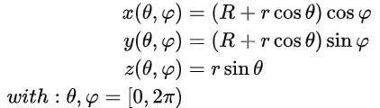
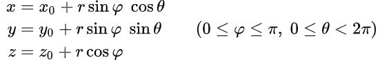
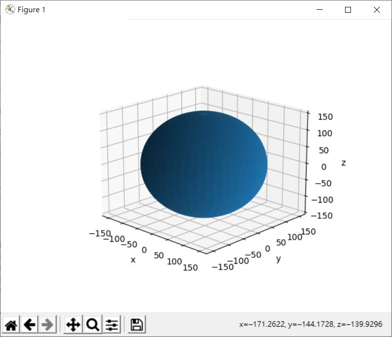

在〈NumPy 與環面（一）〉中最後的程式運算過程，其實就是環面的參數式，以維基百科〈Torus〉條目中的參數式為例：

若直接按照公式來寫程式，可以如下：
import numpy as np
import matplotlib.pyplot as plt
fn = 96
radius1 = 150
radius2 = 50
a_step = np.pi * 2 / fn
a = np.arange(0, np.pi * 2 + a_step, a_step)
THETA, PHI = np.meshgrid(a, a)
cc = radius1 + radius2 * np.cos(PHI)
X = cc * np.cos(THETA)
Y = cc * np.sin(THETA)
Z = radius2 * np.sin(PHI)
ax = plt.axes(projection='3d')
ax.plot_surface(X, Y, Z)
ax.set_xlabel('x')
ax.set_ylabel('y')
ax.set_zlabel('z')
ax.set_box_aspect((1, 1, radius2 / radius1))
plt.show()
類似地，只要能構成封閉曲面的公式，都能拿來建模，例如球面的參數式：

依照公式撰寫而出的程式：
import numpy as np
import matplotlib.pyplot as plt
fn = 96
radius = 150
a_step = np.pi * 2 / fn
THETA, PHI = np.meshgrid(
np.arange(0, np.pi * 2 + a_step, a_step),
np.arange(0, np.pi + a_step, a_step)
)
X = radius * np.sin(PHI) * np.cos(THETA)
Y = radius * np.sin(PHI) * np.sin(THETA)
Z = radius * np.cos(PHI)
ax = plt.axes(projection='3d')
ax.plot_surface(X, Y, Z)
ax.set_xlabel('x')
ax.set_ylabel('y')
ax.set_zlabel('z')
plt.show()
可以畫出以下的圖案：

回頭看看環面的參數式，它的運算其實就是將一個圓面移至指定半徑處，然後繞 z 轉一圈，在撰寫程式時，為了得到 THETA 與 PHI，借助了 np.meshgrid，如果不使用 np.meshgrid 也蠻有趣的，首先，可以先計算出 XZ 平面上的一個圓面，半徑為 radius2，然後移至指定半徑處，也就是將圓面的圓心置於 radius1：
fn = 6
radius1 = 150
radius2 = 50
n = fn + 1 # 頭尾要相接，因此加 1
# 旋轉的度數
phi = np.arange(n) * (np.pi * 2 / fn)
# XZ 平面上的一個圓
sx0 = radius2 * np.cos(phi) + radius1
sz0 = radius2 * np.sin(phi)
接下來要旋轉圓面，然而最後的結果要能餵給 Matplotlib，如果不使用 np.meshgrid 的話，可以自行建立相對應的維度，例如建立 THETA：
THETA = np.repeat([phi], n, axis = 0).T
np.repeat 可以在指定值與軸來進行元素的複製，本來 np.repeat([phi], n, axis = 0) 的結果會是 [[phi], [phi], [phi], [phi], [phi], [phi]]，這可以得到 PHI，然而需要的是 THETA 的部份，這正好是 PHI 的轉置，一個 NumPy 陣列只要接下 .T 就可以得到轉置結果。
為什麼不保留 np.repeat([phi], n, axis = 0) 指定給 PHI 呢？當然，你可以試著自行建立各個對應維度的陣列來進行運算，不過透過擴張計算會更為方便：
# sx0 與 THETA 維度不同，然而因為擴張的關係，X、Y 是二維陣列
X = sx0 * np.cos(THETA)
Y = sx0 * np.sin(THETA)
# Z 也是二維陣列
Z = np.repeat([sz0], n, axis = 0)
將這一切組合起來：
import numpy as np
import matplotlib.pyplot as plt
fn = 6
radius1 = 150
radius2 = 50
n = fn + 1 # 頭尾要相接，因此加 1
# 旋轉的度數
phi = np.arange(n) * (np.pi * 2 / fn)
# XZ 平面上的一個圓
sx0 = radius2 * np.cos(phi) + radius1
sz0 = radius2 * np.sin(phi)
# 因為要交叉計算，用 .T 取得陣列轉置結果
THETA = np.repeat([phi], n, axis = 0).T
# sx0 與 THETA 維度不同，然而因為擴張的關係，X、Y 是二維陣列
X = sx0 * np.cos(THETA)
Y = sx0 * np.sin(THETA)
# Z 也是二維陣列
Z = np.repeat([sz0], n, axis = 0)
ax = plt.axes(projection='3d')
ax.plot_surface(X, Y, Z)
ax.set_xlabel('x')
ax.set_ylabel('y')
ax.set_zlabel('z')
ax.set_box_aspect((1, 1, radius2 / radius1))
plt.show()
執行後畫出來的結果也是個環面，這示範了資料處理時，其實可以有多種做法，結合 NumPy 的話，還可以更為省事。